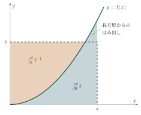

STEP III 2011、第4問
先に進む前に問題を読んでおこう。問題は STEP Support Programme の問題データベースにある： step.maths.org/questions/11-s3-q4
導入
切手に収まるほど単純な図で証明できる不等式がある。原点を通る増加曲線を描く。その曲線の下側の面積と左側の面積を合わせると、必ずある長方形を覆う。このひとつの観察からヤングの不等式（Young’s inequality）\(ab \leq \frac{a^p}{p} + \frac{b^q}{q}\) が得られ、これがさらに、解析学で最も重要な道具のうちの二つであるヘルダーの不等式（Hölder’s inequality）とコーシー・シュワルツの不等式（Cauchy–Schwarz inequality）への鍵となる。
この図には、より深い考え方も含まれている。図は関数とその逆関数（inverse function）を完全に対称な形で組にしており、この組み合わせを一般化したものがルジャンドル変換（Legendre transform）である。ルジャンドル変換は、古典力学の二つの偉大な定式化を結びつけ、また熱力学の二つの主要な記述を結びつける。
取りかかる前に
\(\int_0^a \mathrm{f}(x)\,\mathrm{d}x\) は曲線と \(x\) 軸の間の面積である。同じ図において、\(\int_0^b \mathrm{f}^{-1}(y)\,\mathrm{d}y\) はどの部分の面積を表すか。
\(x = \mathrm{f}^{-1}(y)\) のグラフは、\(y = \mathrm{f}(x)\) と同じ曲線を横から見たものである。したがって \(\int_0^b \mathrm{f}^{-1}(y)\,\mathrm{d}y\) は、高さ \(0\) から高さ \(b\) までの、曲線と \(y\) 軸の間の面積である。これがわかれば、小問 (i) は図を描くだけの問題になる。
順を追って解く
段階 1 図
\((0, 0)\) と \((a, b)\) を頂点とする長方形を描け。\(0\) から \(a\) までの曲線の下側の領域をある色で、\(0\) から \(b\) までの曲線の左側の領域を別の色で塗れ。二つの領域は長方形を覆うか。重なりもはみ出しもなくなるのはどのようなときか。
二つの領域を合わせると長方形 \([0, a] \times [0, b]\) 全体を覆い、通常はその外側の面積も一部含む（図 3.4.1）。長方形内の各点 \((x, y)\) は、曲線の下側にある（\(x \leq a\) なので第一の領域に属する）か、曲線の左側にある（\(y \leq b\) なので第二の領域に属する）かのいずれかである。したがって塗られた面積の合計は、少なくとも長方形の面積 \(ab\) 以上である。これが \((*)\) である。

はみ出しは、曲線と長方形の頂点の間にある、曲線で囲まれた小さな領域である。これが消えるのは、曲線が頂点 \((a, b)\) を通るとき、すなわち \[b = \mathrm{f}(a).\] のときであり、またそのときに限る。
段階 2 ヤングの不等式
\(\mathrm{f}(x) = x^{p-1}\) のとき、\(\mathrm{f}^{-1}(y)\) は何か。二つの積分を計算し、\(\frac1p + \frac1q = 1\) を用いて二つ目を整理せよ。
\(p > 1\) なので、\(\mathrm{f}(x) = x^{p-1}\) は連続かつ増加で \(\mathrm{f}(0) = 0\) を満たし、\(\mathrm{f}^{-1}(y) = y^{1/(p-1)}\) である。このとき \[\int_0^a x^{p-1}\,\mathrm{d}x = \frac{a^p}{p}, \qquad \int_0^b y^{1/(p-1)}\,\mathrm{d}y = \frac{b^{1 + 1/(p-1)}}{1 + 1/(p-1)}.\] \(\frac1p + \frac1q = 1\) より \(q = \frac{p}{p-1}\) であるから、\(1 + \frac{1}{p-1} = \frac{p}{p-1} = q\) となり、二つ目の積分は \(\frac{b^q}{q}\) である。よって \((*)\) は \[ab \leq \frac{a^p}{p} + \frac{b^q}{q}. \qed\] となる。等号は \(b = \mathrm{f}(a) = a^{p-1}\) のときに成り立つはずである。確かめよう。このとき \(ab = a^p\) であり、\(b^q = a^{(p-1)q} = a^p\) であるから、右辺は \(a^p\bigl(\frac1p + \frac1q\bigr) = a^p\) となる。■
\(p = q = 2\) とすると \(ab \leq \frac{a^2 + b^2}{2}\) となる。これは 第 3.2 節 で扱った二数の相加相乗平均の不等式（AM–GM inequality）が姿を変えたものである。
段階 3 逆正弦関数
次に、\([0, \frac\pi2]\) 上で \(\mathrm{f}(x) = \sin x\) とする。これは連続かつ増加で \(\mathrm{f}(0) = 0\) を満たし、\([0, 1]\) 上で \(\mathrm{f}^{-1} = \arcsin\) である。
\(\int_0^a \sin x\,\mathrm{d}x\) は易しい。\(\arcsin y\) はどのように積分すればよいか。
\(\int_0^a \sin x\,\mathrm{d}x = 1 - \cos a\) である。逆正弦関数については、\(\arcsin y \times 1\) とみて部分積分（integration by parts）を行う。 \[\int_0^b \arcsin y\,\mathrm{d}y = \Bigl[ y\arcsin y \Bigr]_0^b - \int_0^b \frac{y}{\sqrt{1 - y^2}}\,\mathrm{d}y = b\arcsin b + \sqrt{1 - b^2} - 1.\] これらを加えると、\((*)\) から \(ab \leq b\arcsin b + \sqrt{1 - b^2} - \cos a\) が得られる。■
ここから \(\arcsin(t^{-1})\) に関する不等式を導け。\(a\) としてどの値を選べばよいか。（できるだけ単純な値を試してみよ。）
\(a = 0\) とすると、\(0 \leq b\arcsin b + \sqrt{1 - b^2} - 1\)、すなわち \(b\arcsin b \geq 1 - \sqrt{1 - b^2}\) となる。（これは単に \(\int_0^b \arcsin y\,\mathrm{d}y \geq 0\) を述べているにすぎない。）\(t \geq 1\) として \(b = 1/t\) とおくと \(0 < b \leq 1\) であり、両辺を \(b\) で割ると \[\arcsin\left(\frac1t\right) \geq t\left(1 - \sqrt{1 - \frac{1}{t^2}}\right) = t - \sqrt{t^2 - 1}. \qed\]
振り返り
証明としての図。小問 (i) は、正しい図が見えれば、それだけで完全な証明になる。幾何学的な事実を積分の間の不等式に翻訳することは、強力な手法である。
一般的な結果を特殊化する。一つの一般的な不等式から、\(\mathrm{f}\) の選び方を変えることで、ヤングの不等式と \(\arcsin\) に関する不等式が得られた。
最も単純な選択が正しい選択であることもある。最後の導出では \(a = 0\) を用いたが、このとき不等式はほとんど自明である。易しい場合を必ず試してみること。
背後にある数学
William Henry Young は1912年にこの不等式を発表した。その重要性は、それが何を導くかにある。\(\sum a_i^p = 1\) かつ \(\sum b_i^q = 1\) と仮定する。各組にヤングの不等式を適用して加えると \[\sum a_i b_i \leq \frac{\sum a_i^p}{p} + \frac{\sum b_i^q}{q} = \frac1p + \frac1q = 1.\] となる。和が \(1\) になるように \(a\) たちと \(b\) たちを定数倍すると、ヘルダーの不等式が得られる。すなわち、正の数に対して \[\sum a_i b_i \leq \Bigl(\sum a_i^p\Bigr)^{1/p} \Bigl(\sum b_i^q\Bigr)^{1/q}.\] が成り立つ。\(p = q = 2\) とすると、これはコーシー・シュワルツの不等式 \(\sum a_ib_i \leq \sqrt{\sum a_i^2}\sqrt{\sum b_i^2}\) であり、二つのベクトル（vector）のなす角の余弦が \(1\) 以下であることを述べている。ヘルダーの不等式は \(L^p\) 空間の理論の基礎である。\(L^p\) 空間とは、「距離」を \(\bigl(\int |f|^p\bigr)^{1/p}\) で測る関数の空間であり、関数解析（functional analysis）や確率論の講義で出会うことになる。
ルジャンドル変換
図 3.4.1 の図は、\(\mathrm{f}\) と \(\mathrm{f}^{-1}\) を完全に対称に扱っている。\(F(a) = \int_0^a \mathrm{f}\)、\(G(b) = \int_0^b \mathrm{f}^{-1}\) とおく。不等式は \(F(a) + G(b) \geq ab\) であり、曲線上で等号が成り立つから \[G(b) = \max_a \bigl( ab - F(a) \bigr).\] である。凸関数（convex function）\(F\) を新しい凸関数 \(G\) に変えるこの操作がルジャンドル変換であり、これを二回適用すると \(F\) に戻る。力学では、ルジャンドル変換は位置と速度の関数であるラグランジアン（Lagrangian）を、位置と運動量の関数であるハミルトニアン（Hamiltonian）に変換する。これらはニュートン（Newton）の法則の二つの同値な定式化であり、大学二年次の講義で出会うことになる。熱力学では、内部エネルギー、エンタルピー、自由エネルギーの間の変換を与える。\(F(a) = a^p/p\) のとき変換は \(G(b) = b^q/q\) となり、これこそがヤングの不等式の二つの指数が \(\frac1p + \frac1q = 1\) で結ばれている理由である。
思考のスキル
積分は面積である。うまく選んだ図の中で面積を比べると、代数的には見抜きにくい不等式を証明できることがある。
ある領域が別の領域を明らかに含んでいる図や、いくつかの領域が第三の領域を明らかに覆っている図を探すこと。そのうえで、それぞれの面積を積分に翻訳する。
次の一歩
1987年版。STEP I 1987、第6問 に挑戦せよ。同じ種類の図を用いて逆関数を積分する問題である。答えは微分して確かめること。
コーシー・シュワルツ。\(p = q = 2\) のヤングの不等式を用いて、正の数に対して \(a_1b_1 + a_2b_2 + a_3b_3 \leq \sqrt{a_1^2 + a_2^2 + a_3^2}\,\sqrt{b_1^2 + b_2^2 + b_3^2}\) を証明せよ。（ヒント：まず二つの平方根がともに \(1\) に等しい場合を扱え。）
指数関数版。\((*)\) において \(\mathrm{f}(x) = e^x - 1\) とし、\(a, b \geq 0\) に対して \[ab \leq e^a - 1 - a + (1 + b)\ln(1 + b) - b.\] を示せ。等号が成り立つのはどのようなときか。
この評価はどれほどよいか。 発展 電卓を用いて、\(t = 1, 2, 10\) について \(\arcsin(1/t)\) と \(t - \sqrt{t^2 - 1}\) を比較せよ。\(t\) が大きいとき、\(t - \sqrt{t^2 - 1} \approx \frac{1}{2t}\) である一方、\(\arcsin(1/t) \approx \frac1t\) であることを示せ。評価がちょうど \(2\) 倍ずれるのはなぜか。（\(a = 0\) のときの図を見よ。はみ出しのうちどれだけが無駄になっているか。）
さらに学ぶために
J. Michael Steele, The Cauchy–Schwarz Master Class（Cambridge University Press）。『コーシー・シュワルツ・マスタークラス』。第 1章と第 9章でコーシー・シュワルツの不等式とヘルダーの不等式を扱い、その途中でヤングの不等式にも触れている。
Roger Nelsen, Proofs Without Words（Mathematical Association of America）。『言葉のいらない証明』。ヤングの不等式をはじめ、図による証明を数多く収めている。
V. I. Arnold, Mathematical Methods of Classical Mechanics（Springer）。『古典力学の数学的方法』。第 14節で、まさにこの図を用いてルジャンドル変換を説明している。高度な内容だが、該当する節は短い。